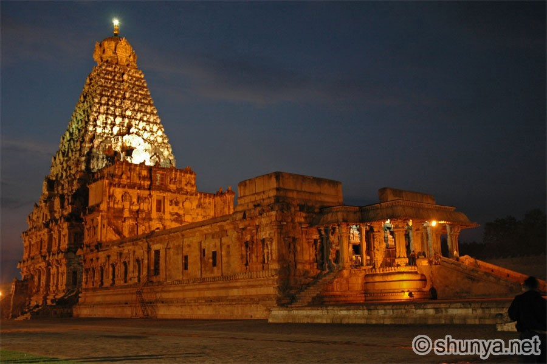

Topics :
1.Vijay
Joseph Vijay Chandrasekhar (born 22 June 1974), known mononymously as Vijay, is an Indian actor, dancer, playback singer and philanthropist who works predominantly in Tamil cinema and also appeared in other Indian languages films. Referred to by fans and media as "Thalapathy" (commander), Vijay is the highest paid actor in Tamil cinema.
2.Temples

Thanjai Periya Kovil
Madurai Meenakshi Temple
Sri Ranganatha Swamy Temple
Annamalaiyer Temple
Kanchi Kailasanathar
3.Scientist

A scientist is a person who conducts scientific research to advance knowledge in an area of interest. Scientists are motivated to work in several ways. Many have a desire to understand why the world is as we see it and how it came to be. They exhibit a strong curiosity about reality.
Back to top